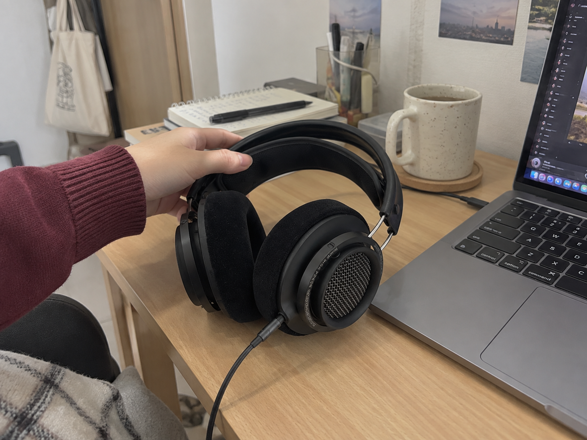
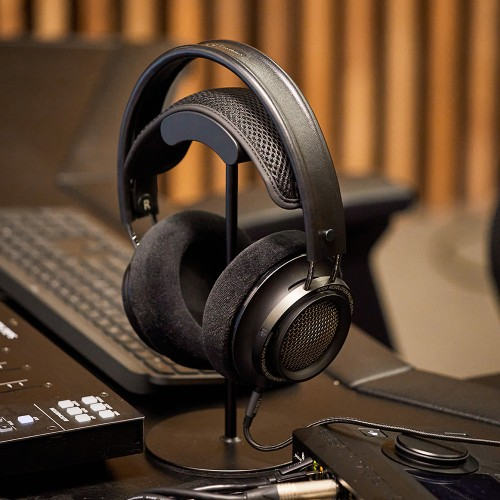
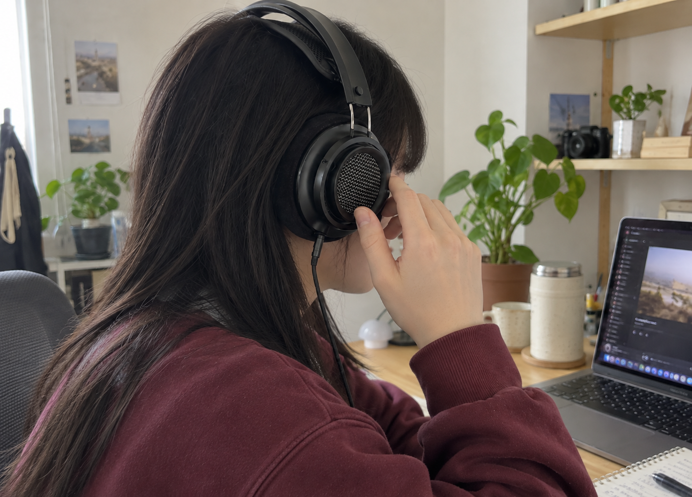
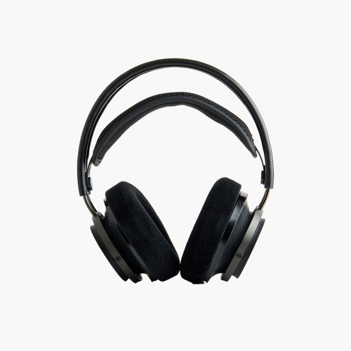
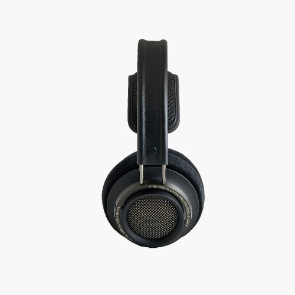

이 포스팅은 네이버 쇼핑 커넥트 활동의 일환으로, 판매 발생 시 수수료를 제공받습니다.
필립스 피델리오 X2HR, 집에서 음악 듣는 유선 오픈형 헤드폰

책상에서 음악을 오래 듣는데 충전 상태까지 챙기기는 번거롭다면, 유선 헤드폰도 선택지가 돼요. 집에서 연결해 쓸 제품을 고르면 휴대성보다 착용 구조와 감상 환경을 먼저 보게 되고요.
필립스 피델리오 X2HR은 오픈형 오버이어 유선 헤드폰이에요. 확인해둔 표시 가격은 99,000원으로, 집에서 쓸 헤드폰을 10만원 아래 예산으로 찾는 분이 눈여겨볼 모델이에요.
1. 집에서 듣는 용도

유선 연결이라 케이블을 쓰는 대신 헤드폰 배터리를 충전하는 과정이 없어요. 노트북이나 오디오 기기 앞에서 음악을 듣는 시간이 길다면 이 방식이 선택 이유가 되죠.

사진을 정리하면서 음악을 틀거나 저녁에 영상을 보는 책상 시간을 떠올려보세요. 이동 중 쓰는 이어폰과 용도를 나누면 집에 둘 헤드폰을 왜 고르는지 더 분명해져요.
(음악 듣는 시간만큼은 천천히 보내고 싶잖아요.)
💚 X2HR 오픈형 구조·이어패드 사진 보기2. 오픈형이라는 기준

오픈형은 주변과 소리를 완전히 차단하는 방향의 제품이 아니에요. 조용한 개인 공간에서 듣는 용도를 먼저 정해두면 선택이 쉬워요.
귀를 감싸는 이어패드와 이중 헤드밴드 형태는 판매 사진으로 확인할 수 있어요. 귀를 감싸는 패드와 헤드밴드 모양을 보고, 평소 선호하는 착용 구조와 맞춰보세요.
3. 연결할 기기까지

X2HR을 고르기 전에는 주로 연결할 기기의 단자와 제공 케이블 구성을 함께 보면 돼요. 헤드폰을 골라도 평소 기기에 바로 연결되는지가 실제 사용의 시작이니까요.
책상에 둘 유선 오픈형 모델을 찾고 있었다면 아래에서 연결 구성과 가격을 보세요. 충전 없이 쓰는 감상용 헤드폰이라는 용도가 맞는 분에게 추천 방향이 분명해요.
(좋아하는 노래를 들을 준비가 간단하면 좋죠.)
집에서 쓸 유선 오픈형을 찾았다면 X2HR을 후보에 넣고, 사용할 기기와 연결 구성을 맞춰 고르세요.
💚 필립스 X2HR 케이블 구성·판매 가격 보기가격은 2026년 10월 6일 확인한 상품 표시 가격으로, 옵션·배송비·구매 시점에 따라 달라질 수 있어요.